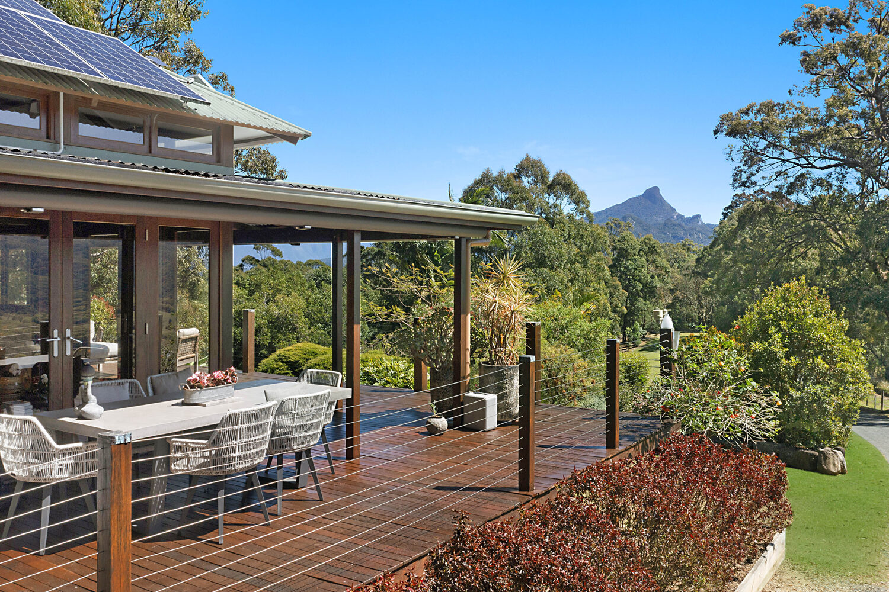
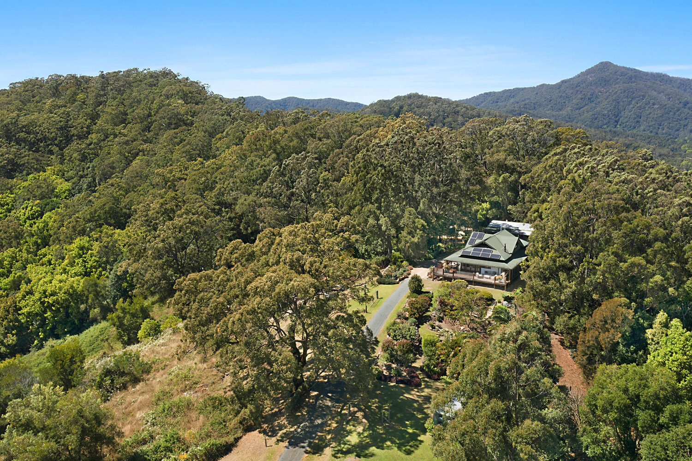
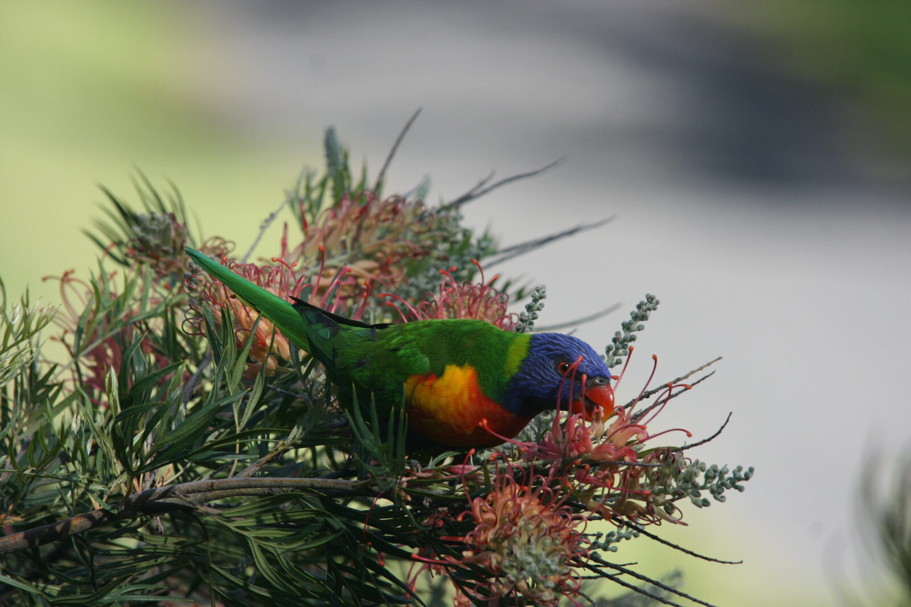
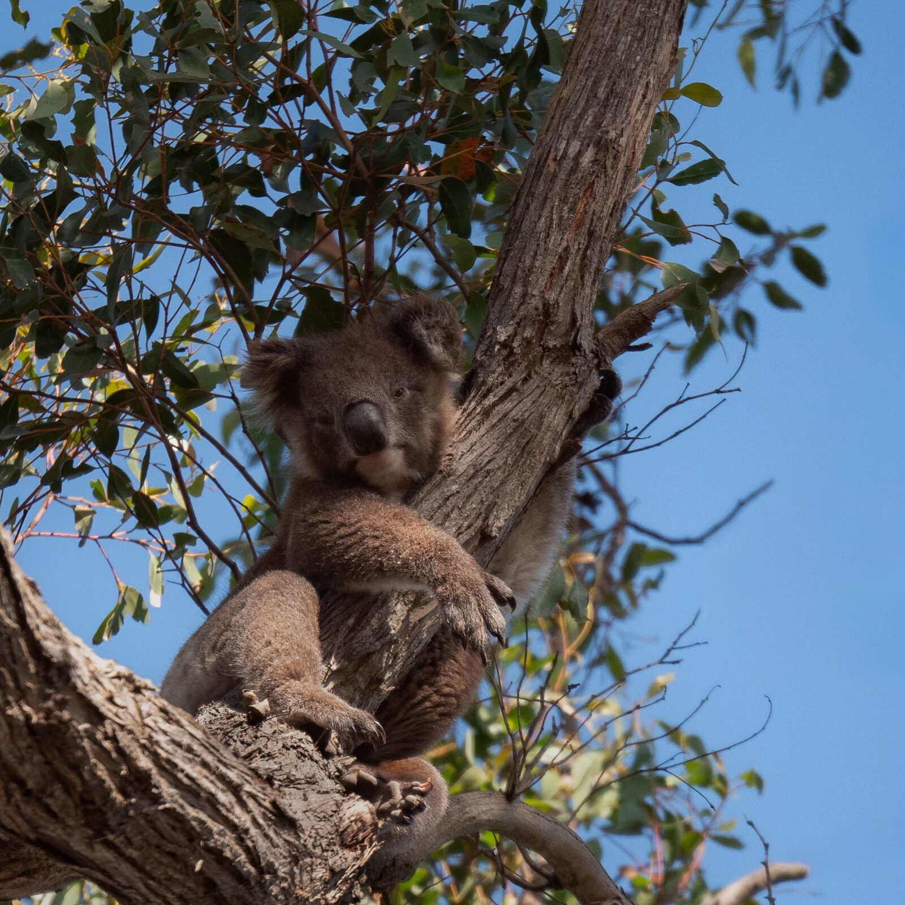
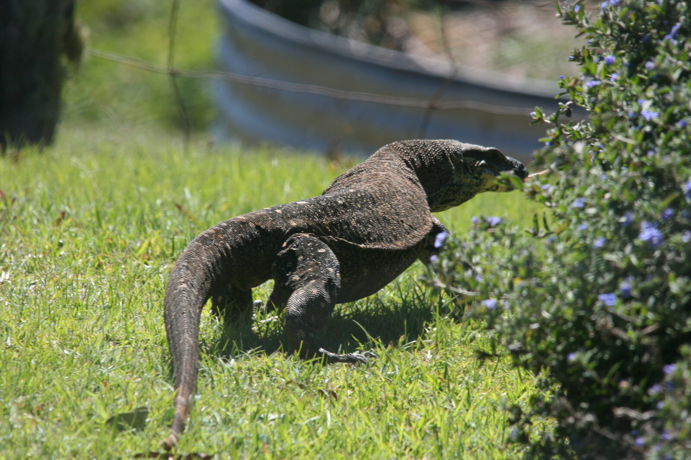
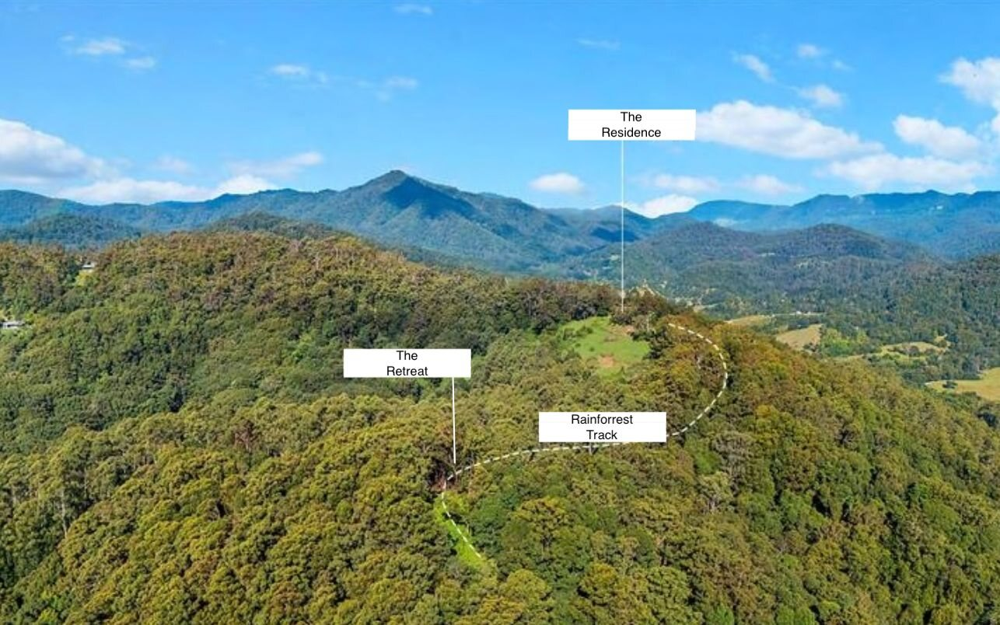

The Estate
A rare convergence of land, architecture and possibility.
A private ridgeline holding of rare scale and beauty.
Opportunities of this scale and composition are increasingly rare. Serra Luma combines a Classic Australian Bush Pavilion residence, approximately 500 metres of Chowan Creek frontage, extensive native forest, established gardens and panoramic views toward Wollumbin across 134 acres of elevated Tweed Valley hinterland, creating an estate of remarkable privacy and possibility.


- Land
- 134 acres of elevated Tweed Valley hinterland
- Views
- Protected panoramic outlooks encompassing Wollumbin (Mt Warning), Springbrook and the Border Ranges
- Residence
- Classic Australian Bush Pavilion residence in native hardwood timber
- Studio
- Separate self-contained guest accommodation
- Creek Frontage
- Approximately 500 metres of permanent Chowan Creek frontage
- Water Security
- 80,000 litres of rainwater storage servicing the residence and studio
- Infrastructure
- Solar power, internal roads and established access throughout the estate
- Shed & Storage
- Extensive workshop, machinery and storage facilities
- Access
- Approximately 1 kilometre of sealed driveway providing all-weather access
- Privacy
- A secluded ridgeline holding surrounded by native forest
- Future Potential
- A secluded multi-acre lower plateau offering exceptional future possibilities (STCA)
- Location
- 5 minutes to Uki, 40 minutes to Brunswick Heads, 50 minutes to Byron Bay, and 45 minutes to Gold Coast Airport
The Experience
Some places are visited. Others are felt.
Serra Luma is an estate defined not only by what it contains, but by how it lives. Morning mist drifts across the valley below. Sunlight moves through native forest and established gardens. The sounds of birdsong replace the noise of everyday life.
Perched along an elevated ridgeline, the estate offers a rare sense of privacy and perspective. Days unfold between architecture and landscape, open pasture and forest, expansive views and quiet moments of retreat.
Despite its scale, Serra Luma feels deeply personal. A place to gather family, host friends, create, restore and reconnect with what matters most.
Rarely does a property offer such a profound connection to land, water and sky.

The Residence
Timeless Australian architecture.
A classic Australian Bush Pavilion, the residence is crafted from native Australian hardwood timber and positioned to embrace the surrounding landscape.
Every detail maximises light, airflow and connection to nature, a home that feels both grounded and elevated. Warm yet sophisticated. Private yet open.


Floor Plan


The Studio
A second sanctuary, entirely its own.
Privately positioned from the main residence, the self-contained studio provides a rare sense of independence while remaining connected to the wider estate.
Ideal for guests, extended family, creative pursuits or quiet retreat, it offers flexibility that extends well beyond traditional accommodation.
Bathed in natural light and surrounded by the tranquillity of the landscape, it creates an additional layer of possibility within Serra Luma, a place to host, create, restore or simply enjoy in complete privacy.


The Land
One hundred and thirty-four living acres.
Native forest, towering Flooded Gums and open pasture unfold across a landscape shaped by water, privacy and remarkable natural beauty. Approximately 500 metres of Chowan Creek frontage forms the estate's boundary, while views rise beyond the ridgeline toward Wollumbin and the surrounding caldera.
Rich birdlife and native wildlife thrive throughout the estate, adding another dimension to the sense of peace and immersion that defines life here. Established gardens, flowering landscapes and fertile ground offer the opportunity to grow herbs, seasonal produce and fresh food from the land, while the surrounding pasture provides space for animals and a more connected, self-sustaining lifestyle.





Retreat Potential
A rare canvas for what comes next.
Approximately 400 metres from the residence lies a secluded lower plateau, accessed via established internal roads and surrounded by native forest. Private, peaceful and naturally separated from the main residence, it presents a remarkable opportunity for future vision and creative expression.
Whether imagined as a wellness retreat, eco-accommodation, meditation pavilion, creative residency or simply a private sanctuary of your own, the setting offers a rare sense of possibility across an already established estate.
Any future development remains subject to relevant approvals.

Location
Connected Yet Entirely Private
Positioned within the lush Tweed Valley hinterland at Chowan Creek, Serra Luma offers remarkable privacy while remaining within easy reach of villages, beaches, airports and city connections.
A world apart, yet never far away.
- Uki Village
- 5 minutes
- Murwillumbah
- 20 minutes
- Brunswick Heads
- 40 minutes
- Cabarita Beach
- 45 minutes
- Gold Coast Airport
- 45 minutes
- Byron Bay
- 50 minutes
- Brisbane
- 1 hr 45 min
Request the full story of Serra Luma.
Enquire to receive the Information Memorandum and further information on the opportunity within.
Private inspections by appointment only. Exact property address released to qualified buyers and agents upon enquiry.